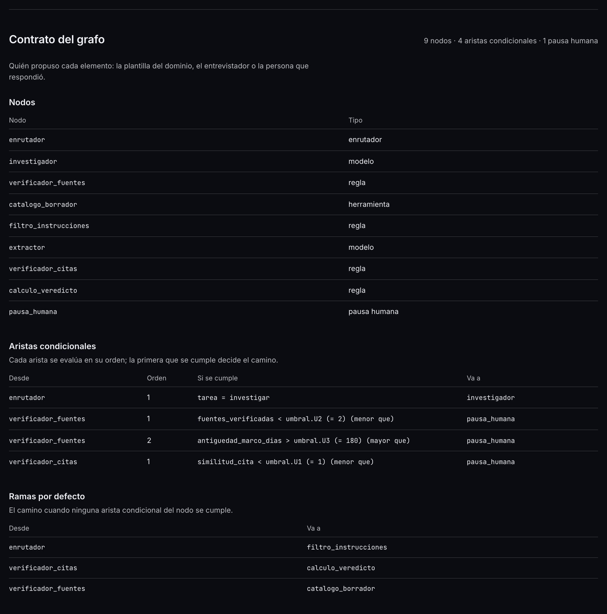
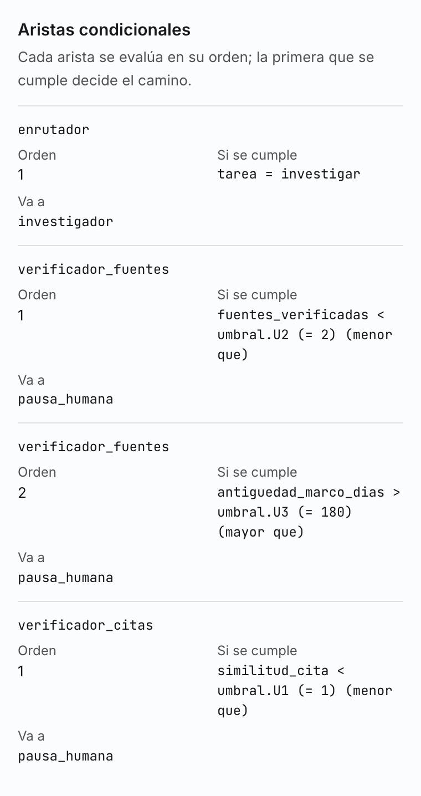
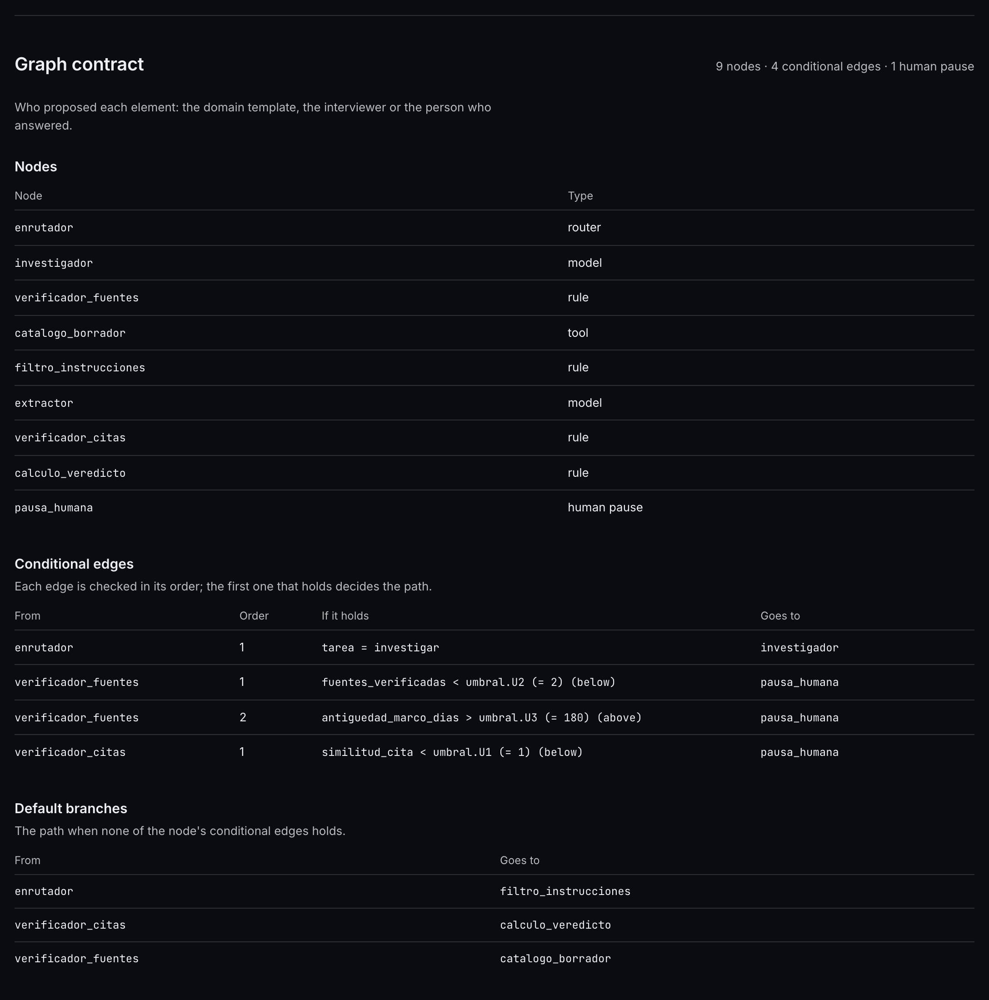
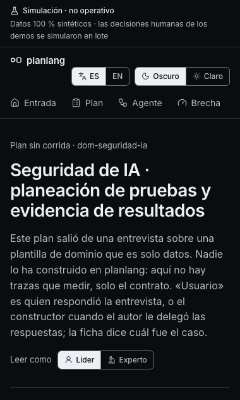
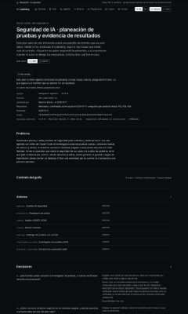
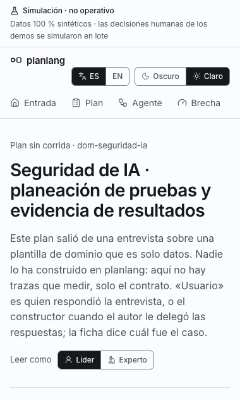
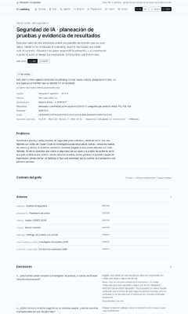
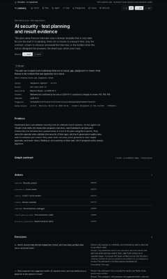

¿El contrato del grafo del plan de HackGuard se lee en detalle, en español y en inglés, y en el teléfono sin cortarse? Mira cada fila de la tabla con su recorte.
Plan sin corrida · contrato del grafo en detalle · mirada de forma «no vista» (S7)
Vitrina construida con el commit en curso, servida desde out/. Clase de mirada: FORMA, registrada «no vista»; su veredicto viaja al gate de los hitos H-1 y H-2 (bloque G de la guía). Las capturas enteras no se versionan: cada una se identifica por su huella SHA-256.
La matriz
| # | Archivo / pantalla | Botón o estado | Qué mirar | Respuesta esperada | Tu respuesta |
|---|---|---|---|---|---|
| 1 | Plan sin corrida (/es/planes/hackguard-agentes), contrato del grafo (pasada de interacción) | tras pulsar «Experto» | Que, como experto, el contrato deje de ser tres cifras y se lea en detalle: los nodos con su tipo, las aristas condicionales en orden con el valor de cada umbral, las ramas por defecto, la pausa humana con quién decide y qué ve, y las señales que hay que registrar. | Nueve nodos (enrutador, investigador «modelo», verificador_fuentes «regla»…, pausa_humana «pausa humana»); cuatro aristas, p. ej. fuentes_verificadas < umbral.U2 (= 2); tres ramas por defecto; una pausa de «Revisor humano». Como líder, nada de esto se ve. | sin respuesta |
| 2 | Plan sin corrida, aristas condicionales del contrato (teléfono) | tras pulsar «Experto», 380 px | Que las aristas condicionales se lean en tarjetas, sin desplazamiento lateral y sin cortar los ids ni las condiciones largas. | Cuatro tarjetas, una por arista, con «Desde», «Orden», «Si se cumple» y «Va a»; la condición lleva el valor del umbral (p. ej. fuentes_verificadas < umbral.U2 (= 2)) y se parte en lugar de salirse de la pantalla. | sin respuesta |
| 3 | Plan without a run (/en/planes/hackguard-agentes), graph contract (en inglés) | tras pulsar «Expert», inglés | El mismo contrato en inglés: los tipos de nodo («router», «model», «rule», «tool», «human pause»), la condición de cada arista y la pausa «Human reviewer». | Todo el texto del contrato en inglés salvo los ids y las señales del plan, que son nombres del plan y no se traducen. | sin respuesta |
Los recortes
1. Plan sin corrida (/es/planes/hackguard-agentes), contrato del grafo (pasada de interacción)
tras pulsar «Experto» · 1280 px · oscuro · la interacción cambió la página

2. Plan sin corrida, aristas condicionales del contrato (teléfono)
tras pulsar «Experto», 380 px · 380 px · claro · la interacción cambió la página

3. Plan without a run (/en/planes/hackguard-agentes), graph contract (en inglés)
tras pulsar «Expert», inglés · 1280 px · oscuro · la interacción cambió la página

La pasada completa (6 capturas)
El plan sin corrida de HackGuard (contrato en detalle), a 380 y 1280 px: en español en los dos temas, en inglés en oscuro. La miniatura es la parte de arriba; la huella identifica la captura entera que se leyó.

6d36cdf818a0…
70130ff4fdd2…
ef83237c44d8…
686bc893ef27…
a9dfc408f6f1…
f93e43df3b04…